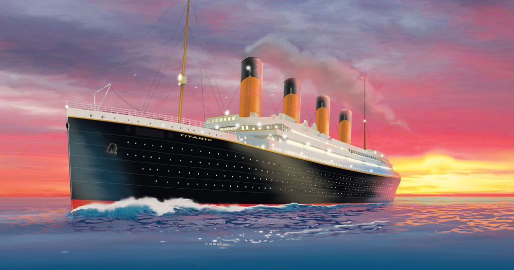

TITANIC

RMS Titanic was a British passenger liner that sank in the North Atlantic Ocean in 1912 after strinking an iceberg during her maiden voyage from Southampton to New York City.
Of the estimated 2,224 passengers and crew aboard, more than 1,500 died, making the sinking one of modern history's deadliest peacetime commercial marine disasters. RMS
Titanic was the largest ship afloat at the time she entered service and was the second of three Olympic-class ocean liners operated by the White Star Line. She was built by
the Harland and Wolff shipyard in Belfast. Thomas Andrewd, chief naval architect of the shipyard at the time, died in the disaster.